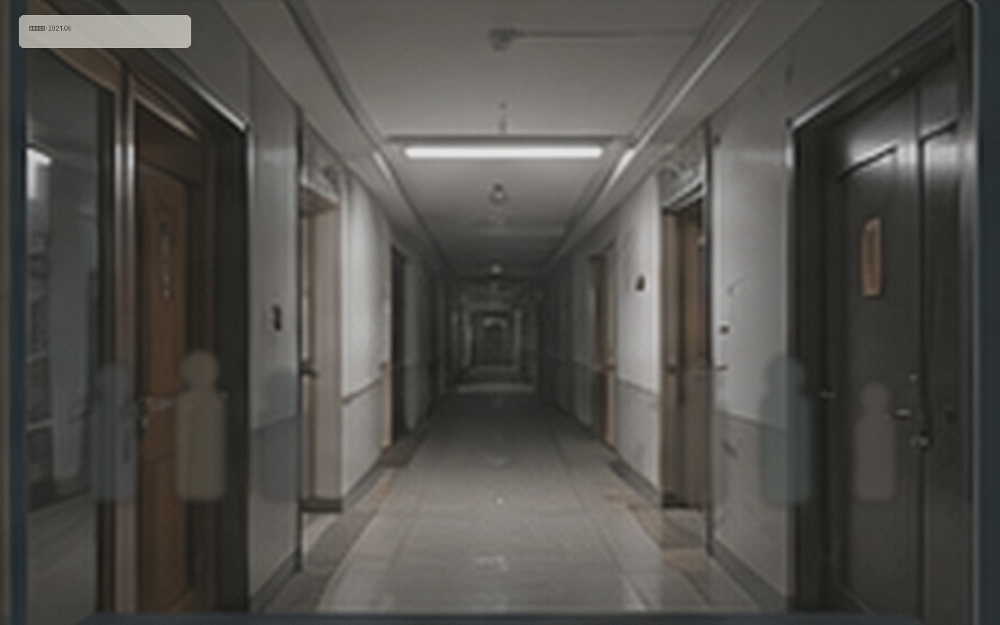

五月的最后一个周末，我们把原计划在一层休息区进行的摄影分享拆成了几组小型拍摄。参与住户可以自由选择公共空间、走廊或窗景作为主题。

当天的路线包括一层公共区、A栋高层走廊和社区外步行道。活动只使用自然光，照片由住户自行保留，社区网站仅发布授权版本。
当天的小记录
- 上午：公共休息区静物与建筑细节
- 下午：A栋、B栋高层自然光练习
- 傍晚：旧城高架与沿街店铺步行拍摄
因后续授权调整，部分个人作品已从本页移除。活动合影保留为公共活动记录。
本页面内容最后更新于 2023-12-19